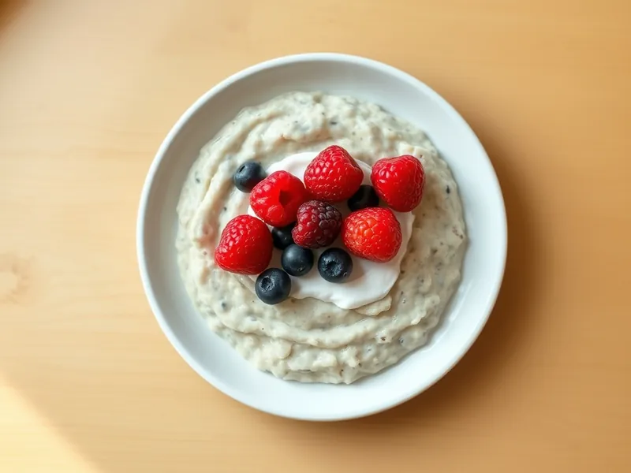

Ленивая овсянка в банке с ягодами
Овсянка без варки: залить с вечера молоком и йогуртом, утром завтрак готов
490 мин1 порц.354 ккал на порциюБ 15 · Ж 9 · У 52Интернациональная кухня
Открыть в приложении: порции, таймеры, список покупок
Продукты на 1 порц.
- Овсяные хлопья5 ст. л.
- Молоко100 мл
- Йогурт без добавок100 г
- Мёд1 ч. л.
- Ягоды (свежие или замороженные)60 г
- Корица по желанию1 щеп.
Как готовить
- Насыпьте овсяные хлопья в банку объёмом 400-500 мл.
- Добавьте йогурт, молоко и мёд, при желании щепотку корицы.
- Закройте крышкой и хорошо встряхните 30 секунд или перемешайте ложкой, чтобы все хлопья пропитались.
- Сверху выложите ягоды, закройте банку и уберите в холодильник минимум на 8 часов.
- Утром перемешайте: хлопья станут мягкими, а масса густой, как каша. Ешьте холодной или прогрейте 1 минуту в микроволновке без крышки.
Совет. Берите хлопья, которые варятся 5-10 минут, а не быстрые: быстрые за ночь превращаются в кашицу. Банка хранится в холодильнике до 2 дней.